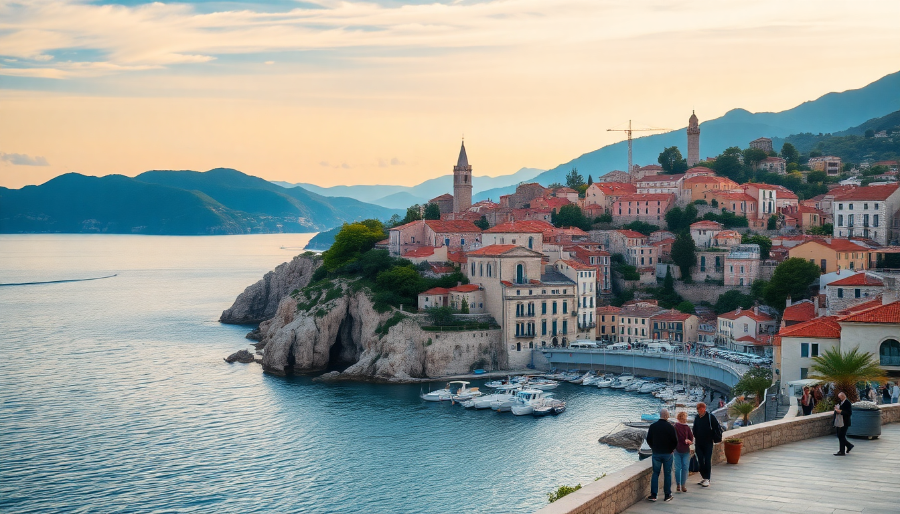

7-Day Croatia Itinerary: Dubrovnik, Split, Hvar & Plitvice

I landed in Dubrovnik with a backpack, a ferry schedule, and a vague plan to hit Split, Hvar, and Plitvice in seven days. No car, no Croatian phrasebook, just a willingness to move fast and eat well. Here’s exactly how I did it—including the ferry I almost missed and the restaurant I’d fly back for.
Is seven days enough for Dubrovnik, Split, Hvar, and Plitvice?
Barely, but yes—if you pack smart and move early. I spent two days in Dubrovnik, one night on Hvar, two in Split, and a full day at Plitvice Lakes. The key is using catamarans (Jadrolinija and Krilo) instead of buses for the coastal legs, and booking a guided day-trip from Split to Plitvice so you don’t waste half a day figuring out the bus schedule.
- Dubrovnik (2 days): Old Town walls, Lokrum Island, and a cable car up Mount Srđ.
- Hvar (1 night): Ferry from Dubrovnik to Hvar town, then catamaran to Split.
- Split (2 days): Diocletian’s Palace, Marjan Hill, and a day trip to Plitvice.
- Plitvice Lakes (1 day): Early morning entry, lower lakes first, upper lakes after lunch.
How do I get from Dubrovnik to Hvar without losing a day?
Take the Krilo catamaran from Dubrovnik’s Gruž Harbor directly to Hvar town. It runs daily from April to October and takes about 4.5 hours. I booked my ticket online the night before (€45 one way) and grabbed a seat on the upper deck—views of Korčula and Brač along the way. Don’t take the bus; it adds a ferry transfer at Drvenik and costs almost the same.
- Krilo catamaran: Departs Dubrovnik 08:00, arrives Hvar 12:30.
- Jadrolinija ferry: Slower, cheaper (€12), but only runs to Stari Grad on Hvar—then you need a bus to Hvar town.
- Pro tip: Pack a sandwich from Dubrovnik’s Pantarul bakery (Ul. Svetog Križa 5) for the ride.
What’s worth doing in Dubrovnik besides the Game of Thrones stuff?
The Old Town walls are worth the €35 ticket—go at 08:00 before the cruise ship crowds. Skip the Red History Museum (overpriced and gimmicky) and spend that afternoon on Lokrum Island. The ferry from the Old Port runs every hour (€15 round trip), and you can swim in the Dead Sea saltwater lake, hike to the botanical gardens, and see peacocks roaming the ruins. For dinner, I walked to Konoba Dubrava in the Bosanka neighborhood—a 20-minute climb above the city, but the grilled octopus and view of the Adriatic are worth the sweat.
- Walk the walls: Enter at Pile Gate, exit at Ploče Gate.
- Lokrum Island: Bring a towel, water shoes, and snacks (the café there is pricey).
- Dinner: Konoba Dubrava (Bosanka 7) for grilled fish and local wine.
- Skip: The cable car (€27, long queue, and the view from Mount Srđ is free if you hike up).
Should I stay overnight on Hvar or just do a day trip?
Stay overnight. Hvar town empties out after 18:00 when the day-trippers catch the last catamaran back to Split, and the evening on the Riva is genuinely pleasant—wine bars, live music, and fewer selfie sticks. I booked a room at Hotel Adriana (right on the harbor) for €120 a night in June, which felt steep but included breakfast and a rooftop pool. Dinner at Dalmatino (Ul. Tome de Michelija 2) was the best meal of the trip: black risotto with cuttlefish and a local Pošip white.
- Hotel Adriana: Central, clean, rooftop pool, but book direct for the best rate.
- Dinner: Dalmatino—order the black risotto and the lamb under a bell (peka).
- Nightcap: Hula Hula Bar on the beachfront for a sunset Aperol spritz.
- Morning tip: Hike up to the Fortica fortress (free, 15 minutes) before the heat hits.
What’s the best way to see Diocletian’s Palace in Split?
Don’t pay for a guided tour. The palace is a living neighborhood—people live in apartments above the cellars. I downloaded a free audio guide from the Split Walking Tour app and wandered the Peristyle, the Cathedral of St. Dominus (climb the bell tower for €12), and the basement halls where they filmed Daenerys’s throne room. For lunch, skip the tourist spots on the Riva and walk five minutes to Konoba Marjan (Ul. Matoševa 7) for a plate of pršut and cheese with a glass of local Babić red.
- Free route: Start at the Bronze Gate (south entrance), walk through the cellars, emerge at the Peristyle, then climb the bell tower.
- Lunch: Konoba Marjan—small, cash only, and the best prosciutto in town.
- Afternoon: Walk up Marjan Hill for the view—it’s a 30-minute climb through pine forest, and there’s a small beach (Kašjuni) at the bottom.
- Avoid: The Diocletian’s Palace Tour from the tourist booth—it’s €30 and covers nothing you can’t see on your own.
Can you do Plitvice Lakes as a day trip from Split?
Yes, but it’s a long day. I booked a group tour with Plitvice Transfer (€65 per person, includes entry and transport) that picked me up at 06:30 from Split’s main bus station and returned at 19:00. The park itself is stunning—boardwalks over turquoise lakes, waterfalls you can walk behind, and almost no crowds if you enter at 09:00. I chose Program C (the longest route, 6-7 hours) and saw all 16 lakes.
- Entry ticket: €40 in peak season—book online at least 3 days ahead.
- Route: Start at Entrance 1 (lower lakes), follow the boardwalk to the big waterfall (Veliki Slap), then take the shuttle bus to Entrance 2 for the upper lakes.
- What to bring: Water shoes (boardwalks get slippery), a rain jacket (it can drizzle even in summer), and snacks (the on-site restaurants are overpriced and mediocre).
- Skip: The electric boat ride on Kozjak Lake—it’s included in the ticket but adds 30 minutes of queueing.
Where should I eat in Split on my last night?
Varoš neighborhood, just west of the palace walls. I had dinner at Konoba Korta (Ul. Korta 7), a family-run spot with stone walls, candlelight, and a menu that changes daily based on what the fisherman caught. I ordered the grilled sea bass with Swiss chard and a side of blitva (potato and chard)—simple, fresh, and the best €25 I spent in Croatia. For dessert, walk to Luka Ice Cream & Cakes (Ul. Kraj Sv. Ivana 2) for a scoop of fig and walnut gelato.
- Konoba Korta: Reserve via Facebook message—they don’t take phone calls.
- Luka Ice Cream: Cash only, but the flavors change weekly.
- Late drink: Ghetto Bar (Ul. Dosud 10) in the palace cellars—low-key, good wine list, no music.
FAQ
Is it better to rent a car or use ferries and buses? Ferries and buses work fine for this route, and they save you the headache of parking (especially in Dubrovnik’s Old Town, which is car-free). I used Krilo catamarans for the coast and a tour bus for Plitvice. If you want to explore Pelješac Peninsula or the islands beyond Hvar, then rent a car—otherwise, skip it.
What’s the best time of year for this itinerary? May and September. June through August is peak season—crowds, heat, and prices double. I went in late May: 24°C days, empty ferries, and no queue for the Dubrovnik walls. Plitvice in May is green and full of waterfalls; by August, the boardwalks are shoulder-to-shoulder.
How much should I budget for a week in Croatia? I spent about €1,200 total (June 2024), including flights from London. Breakdown: accommodation €400 (mix of hotels and a hostel in Split), transport €250 (ferries, bus, Plitvice tour), food €300 (mostly dinners out, picnic lunches), entry fees €150 (walls, Plitvice, Lokrum). You can go cheaper by staying in dorms and eating burek for breakfast, but I wouldn’t skip Dalmatino or Konoba Korta.
Conclusion
- Move early: Start your day at 07:00 to beat the cruise ship crowds in Dubrovnik and Split.
- Book ferries ahead: Krilo catamarans sell out in summer—reserve online 48 hours before.
- Eat local: Skip the tourist-trap pizzerias on the Riva and walk into Varoš or Bosanka for real Dalmatian food.
- Pack light: Cobblestone streets, ferry stairs, and Marjan Hill demand a backpack, not a roller bag.
- One day for Plitvice is enough: Take a tour from Split to save logistics, and enter at 09:00 sharp.